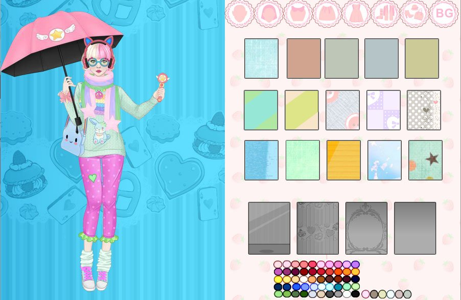

When I was 5, I used to come home from kindergarten a lot earlier than my brother, who was in grade school. I was getting better at reading, but not enough that I felt like reading through entire webpages. I did know instinctively how to get around a computer.
Sometimes, I would open a browser and click all the little buttons on top to get to the game sites my brother has bookmarked. I was grateful for the images and icons that guided me through.
Soon enough, I found the games I liked to play. I ended up on Zapak Girls, and looked at dress up games and concert games. I had a lot of fun with the visuals and I was already fascinated with digital art.